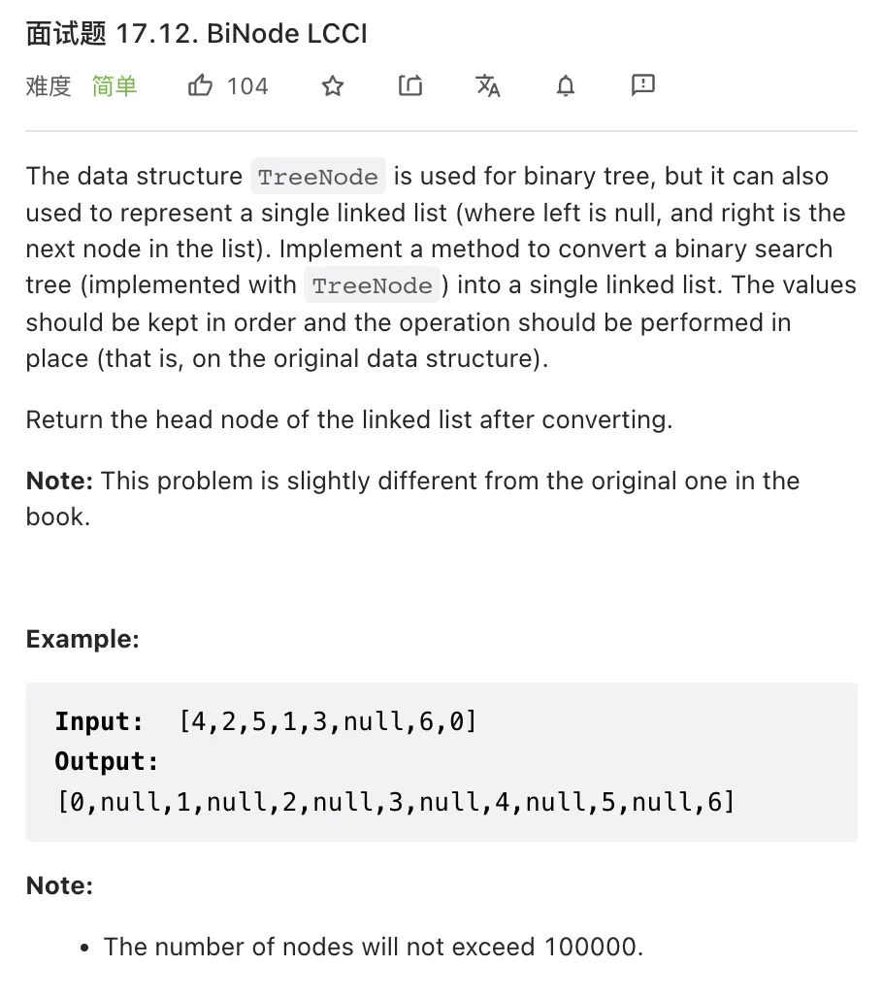

面试题 17.12. BiNode LCCI
Question

先自己想想看 🤔Try it yourself first 🤔
✍🏽 My Solution
执行用时：0 ms, 在所有 Java 提交中击败了100.00%的用户
内存消耗：46 MB, 在所有 Java 提交中击败了47.76%的用户
class Solution {
private TreeNode dummy = new TreeNode();
private TreeNode tail = dummy;
public TreeNode convertBiNode(TreeNode root) {
inorder(root);
return dummy.right;
}
private void inorder(TreeNode root) {
if (root == null) return;
// 左子樹
inorder(root.left);
// 把遍歷到的節點放入結果鏈表中
tail.right = root;
tail = root;
tail.left = null;
//右子樹
inorder(root.right);
}
}
🧠 Thought Process
- Why did I choose this particular implementation?
- 參考王爭，題目轉化為二叉搜索樹中序遍歷
- Binary Search Tree 用中序遍歷就能得到一個升序序列，故在遍歷的過程中，修改每一個根節點的左右指向
- 因為是中序遍歷就不需要暫存root的左、右節點
- What is the time/space complexity of my solution? How do I know?
- time: O(n)
- space: O(n)